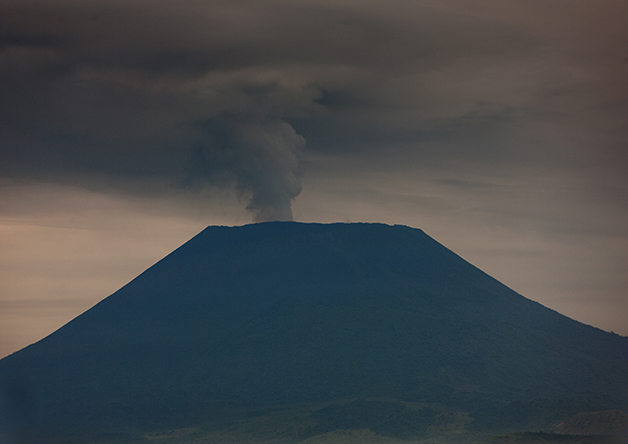

Nyiragongo
República Democrática do Congo - África Central
O Monte Nyiragongo é um estratovulcão ativo nas Montanhas Virunga, associado com o Grande Vale do Rift. Está localizado na República Democrática do Congo, a 20 km a norte da cidade de Goma e do Lago Kivu, e a 11 km a oeste da fronteira República Democrática do Congo-Ruanda. A cratera principal está localizada a 250 m de profundidade, a dois quilômetros da borda do vulcão e às vezes contém lagos de lava. O Nyiragongo e o vulcão próximo Nyamuragira são juntos responsáveis por 40% das erupções vulcânicas históricas da África.
